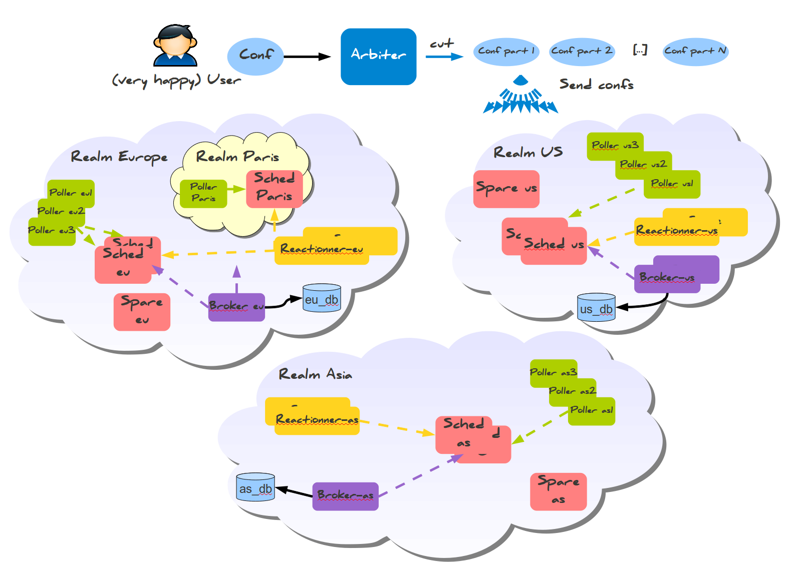

Problème
Ceilometer's purpose is to track and *measure/meter* usage information collected from OpenStack components (originally for billing). While Ceilometer is usefull for the cloud operators and infrastructure metering, it is not a *monitoring* solution for the tenants and their services/applications running in the cloud because it does not allow for service/application-level monitoring and it ignores detailed and precise guest system metrics.
Quoi
Surveil est une API REST permettant de contrôler un système de supervision (Alignak).
- Scalable
- Command line interface
- Bindings Python
- Interface web
- Intégration facile avec OpenStack
- Paqueté
API Restful
- GET /v2/status/hosts/(host_name)
- GET /v2/config/hosts/(host_name)
- PUT /v2/config/hosts/(host_name)
- DELETE /v2/config/hosts/(host_name)
- GET /v2/config/hosts/(host_name)/services
- POST /v2/actions/acknowledge
API - Authentification
- Séparation des utilisateurs en "royaumes"
- Plusieurs back ends d'authentification

Command-line interface
Permet de:
- Créer/Modifier/Supprimer des hôtes
- Créer/Modifier/Supprimer des services
- Consulter la configuration
- Consulter les états live
- Lancer des commandes (recheck, downtimes, etc...)
CLI - Configuration
Création de hosts avec la ligne de commande
surveil config-host-create --host_name web1 --address 127.0.0.1 --use linux-system-nrpe
Aussi disponibles:
surveil config-host-updatesurveil config-host-deletesurveil config-service-createsurveil config-service-updatesurveil config-service-delete
CLI - Configuration
surveil config-host-list
Consultation de la liste des hôtes supervisés
CLI - Status
surveil status-host-list
Consultation de l'état live des hôtes supervisés
OpenStack
État actuel:
- Ceilometer: télémétrie != supervision
- Pas suffisament de métriques
Intégration OpenStack
- Supervision automatique des hôtes à la creation d'instances
- Exportation des données de supervision vers Ceilometer
- Autoscaling avec Heat basé sur des métriques applicatives
Intégration OpenStack - Architecture
Intégration aux commandes Nova
Configuration de la supervision à partir de tags Nova
nova boot --image ubuntu --flavor 1 --meta surveil_tags='linux-system-nrpe' machine_name
ROADMAP
- Authentication multi backend
- Isolation des utilisateurs en royaumes
- Optimisation de la propagation de la configuration
- Interface web: Configuration
- Modules Puppet officiels